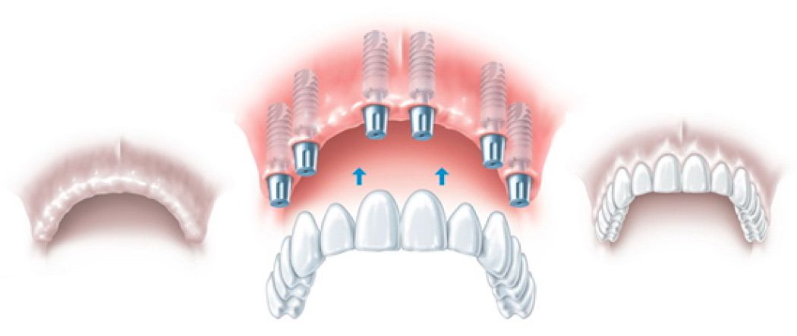

Комплексная имплантация зубов
Что такое комплексная имплантация зубов?
Если у пациента отсутствуют все зубы на челюсти, нет необходимости устанавливать имплантат под каждую зубную коронку по отдельности. Это дорого, долго и травматично. Достаточно грамотно установить всего 4 или 6 имплантатов и зафиксировать на них протез так, чтобы нагрузка на челюстную кость была равномерно распределена. Такая имплантация в кругу стоматологов получила название комплексная (англ., full mouth implants).
Итак, комплексная имплантация зубов – это функциональное и эстетическое восстановление всего зубного ряда при помощи имплантатов и несъемного или условно-съемного протеза.
В каких случаях проводится комплексная имплантация?
- Отсутствие всех зубов челюсти (полная адентия);
- Отсутствие всех жевательных зубов при пародонтите фронтальных зубов;
- Генерализованный пародонтит челюсти 3-4 степени;
- Расшатывание опорных зубов на мостовидных протезах и др.
Основные методы комплексной имплантации сегодня:
- Комплексная имплантация зубов на корневидных имплантатах. Винтовая несъемная фиксация мостовидного протеза на 6 или 8 имплантатах.
- All-on-4 (все на четырех). Винтовая несъемная фиксация протеза на 4-х традиционных имплантатах, объединенных единой балкой.
- Базальная имплантация (кортикальная или бикортикальная). Несъемная фиксация протеза с помощью цемента на 8 или 10 имплантатах особой формы.
- Фиксация съемных протезов. Условно-съемная фиксация акриловых протезов с помощью 2-х или 4-х имплантатов. Это самый экономичный вариант, при котором протез необходимо снимать на ночь.
Комплексная имплантация зубов сегодня очень востребована, и в стоматологической поликлинике «Здоровая Улыбка» ей уделяют особое внимание.
Российскими учеными под руководством профессора кафедры ортопедической стоматологии МГМСУ, д.м.н. Миргазизова М.З. и практикующими стоматологами нашего центра была разработана комплексная программа имплантации с моментальной нагрузкой, которая получила название - крестальная комплексная имплантация зубов (от англ. crestal - альвеолярный гребень). Данный метод имплантации выгодно отличается от тех, что представлены на рынке стоматологических услуг в нашей стране.
Комплексная крестальная имплантация зубов, которую практикуют в нашем центре, не новый и не экспериментальный метод. Она проводится с применением классических имплантологических систем, а хирургические и ортопедические этапы проходят согласно международным протоколам лечения. При этом специалисты центра «Здоровая Улыбка» используют уникальные запатентованных ноу-хау разработки в конструкции самого протеза, что позволяет проводить моментальное протезирование сразу после установки имплантатов.
Часто задаваемые вопросы
Мой врач сказал мне, что после установки имплантов нужно ждать не менее 4 месяцев, чтобы поставить протез. Почему вы ставите протез сразу на 4-й день? Разве импланты не должны срастись с костью?
Метод комплексной крестальной имплантации предполагает моментальное протезирование сразу после установки имплантов. Имплантаты Osstem обладают очень выраженной первичной стабильностью и надежно фиксируются (шинируются) между собой мостовидным протезом, именно поэтому вся конструкция получается надежная и прочная. Полное срастание имплантатов с костью происходит через 3-6 месяцев.
Из какого материала изготавливаются зубные импланты, которые вы устанавливаете, и сам протез?
Имплантаты OSSTEM изготовлены из чистого медицинского титана - биоинертного (невидимого) для организма человека материала.
Фрезерованный протез изготовлен по технологии cad/cam из высокопрочного гипоаллергенного материала РММА (Poly methyl methacrylate).
Не поняла из текста статьи, нужен ли про вашей комплексной имплантации синус-лифтинг или нет? Я была на консультации в одном центре, где мне сказали, что можно и без него, хотя все другие врачи говорят.
Метод комплексной крестальной имплантации, который используют в нашем центре, позволяет обойтись без синус-лифтинга приблизительно в 30% случаев. Все будет завесить от размера и анатомических особенностей гайморовых пазух, плотности костной ткани и возможности поставить имплантаты под углом. Мы используем международные протоколы зубной имплантации и не ставим экспериментов над своими пациентами. Поэтому если наш специалист назначает синус-лифтинг, он в первую очередь руководствуется главным постулатом клятвы Гиппократа – «не навреди».
Мой врач сказал мне, что после установки имплантов нужно ждать не менее 4 месяцев, чтобы поставить протез. Почему вы ставите протез сразу на 4-й день? Разве импланты не должны срастись с костью?
Метод комплексной крестальной имплантации предполагает моментальное протезирование сразу после установки имплантов. Имплантаты Osstem обладают очень выраженной первичной стабильностью и надежно фиксируются (шинируются) между собой мостовидным протезом, именно поэтому вся конструкция получается надежная и прочная. Полное срастание имплантатов с костью происходит через 3-6 месяцев.
Из какого материала изготавливаются зубные импланты, которые вы устанавливаете, и сам протез?
Имплантаты OSSTEM изготовлены из чистого медицинского титана - биоинертного (невидимого) для организма человека материала. Фрезерованный протез изготовлен по технологии cad/cam из высокопрочного гипоаллергенного материала РММА (Poly methyl methacrylate).
Отзывы пациентов о комплексной имплантации зубов
Виктор
Совершенно случайно в Москве попал в клинику «Здоровая Улыбка» и с удивлением для себя узнал о методе комплексной имплантации. Через 2 месяца, взвесив все за и против, согласился на операцию и ни на секунду не пожалел. Большое спасибо докторам за мою ЗДОРОВУЮ УЛЫБКУ!
Наталья Владимировна
Выражаю сердечную благодарность Прокофьевой Ольге Викторовне и Мартынюку Алексею Викторовичу за прекрасно проделанную работу. Благодаря имплантации, которую они сделали, я на всю жизнь сказала НЕТ съемному протезу.
Дмитрий Олегович
Я сам врач и преподаватель в одном из ВУЗов в Санкт-Петербурге. Давно мечтал закрыть свой зубной вопрос. Долго выбирал клинику и врача. В итоге, благодаря совету своих коллег, провел комплексную имплантацию в вашем центре и с большим удивлением обнаружил для себя, насколько это может быть быстро, безболезненно и главное не так дорого, как я думал. Большое спасибо виртуозному хирургу Канату Тураровичу, его ассистенту Анастасии, ортопедам Иолане Вячеславовне и Алексею Викторовичу. Смело готов рекомендовать вашу клинику всем своим знакомым.